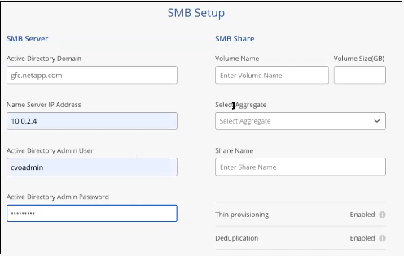
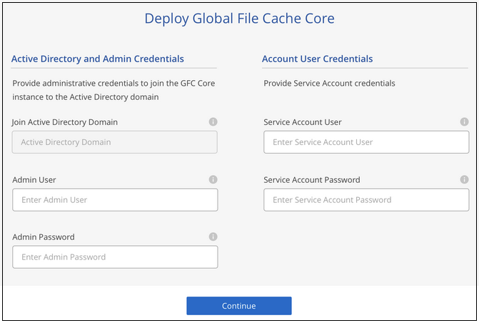
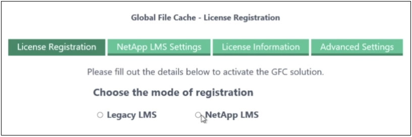
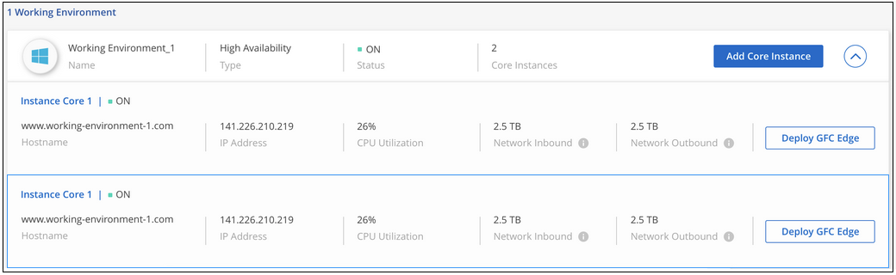

Demander de modifier un document
Demander de modifier un document Modifier sur GitHub
Modifier sur GitHub Guide des contributeurs
Guide des contributeursPour commencer
Contributeurs
BlueXP vous permet de déployer le logiciel Global File cache Management Server et Global File cache Core dans l’environnement de travail.
Activez Global File cache à l’aide de BlueXP
Dans cette configuration, vous déployez le serveur de gestion du cache de fichiers global et le noyau du cache de fichiers global dans le même environnement de travail où vous avez créé votre système Cloud Volumes ONTAP à l’aide de BlueXP.
Regarder "vidéo" pour voir les étapes du début à la fin.
Démarrage rapide
Pour démarrer rapidement, suivez ces étapes ou faites défiler jusqu’aux sections restantes pour obtenir des informations détaillées :
Déployez Cloud Volumes ONTAP dans Azure ou AWS et configurez les partages de fichiers SMB. Pour plus d’informations, voir "Lancement d’Cloud Volumes ONTAP dans Azure" ou "Lancement d’Cloud Volumes ONTAP dans AWS".
Déployer une instance du serveur de gestion globale du cache des fichiers dans le même environnement de travail que l’instance de Cloud Volumes ONTAP.
Déployez une ou plusieurs instances de Global File cache Core dans le même environnement de travail que l’instance de Cloud Volumes ONTAP et joignez-la à votre domaine Active Directory.
Configurez le service LMS (Global File cache License Management Server) sur une instance de base Global File cache. Vous aurez besoin de vos identifiants NSS ou d’un ID client et d’un numéro d’abonnement fournis par NetApp pour activer votre abonnement.
Voir "Déploiement des instances Global File cache Edge" Pour déployer les instances Global File cache Edge dans chaque emplacement distant. Cette étape n’est pas effectuée avec BlueXP.
Déployez Cloud Volumes ONTAP comme plateforme de stockage
Dans la version actuelle, Global File cache prend en charge Cloud Volumes ONTAP déployé dans Azure ou AWS. Pour obtenir des informations détaillées sur les prérequis, les exigences et les instructions de déploiement, voir "Lancement d’Cloud Volumes ONTAP dans Azure" ou "Lancement d’Cloud Volumes ONTAP dans AWS".
Notez la nécessité supplémentaire suivante de Global File cache :
-
Vous devez configurer les partages de fichiers SMB sur l’instance de Cloud Volumes ONTAP.
Si aucun partage de fichiers SMB n’est configuré sur l’instance, vous êtes invité à configurer les partages SMB lors de l’installation des composants Global File cache.
Activez Global File cache dans votre environnement de travail
L’assistant Global File cache vous guide dans les étapes de déploiement de l’instance Global File cache Management Server et de l’instance Global File cache Core, comme indiqué ci-dessous.

-
Sélectionnez l’environnement de travail dans lequel vous avez déployé Cloud Volumes ONTAP.
-
Dans le panneau Services, cliquez sur *Activer le réseau de réseau sans réseau sans réseau.

-
Lisez la page vue d’ensemble et cliquez sur Continuer.
-
Si aucun partage SMB n’est disponible sur l’instance Cloud Volumes ONTAP, vous êtes invité à entrer les informations du serveur SMB et du partage SMB afin de créer le partage maintenant. Pour plus de détails sur la configuration SMB, voir "Plateforme de stockage".
Lorsque vous avez terminé, cliquez sur Continuer pour créer le partage SMB.

-
Sur la page Service de cache de fichiers global, entrez le nombre d’instances Global File cache Edge que vous prévoyez de déployer, puis assurez-vous que votre système répond aux exigences relatives aux règles de configuration réseau et de pare-feu, aux paramètres Active Directory et aux exclusions antivirus. Voir "Prérequis" pour en savoir plus.

-
Après avoir vérifié que les exigences ont été respectées ou que vous disposez des informations nécessaires pour répondre à ces exigences, cliquez sur Continuer.
-
Entrez les informations d’identification administratives que vous utiliserez pour accéder à la VM du serveur de gestion du cache de fichiers global, puis cliquez sur Activer le service de réseau réseau sans réseau sans réseau (GFC). Dans Azure, vous saisissez les identifiants sous forme de nom d’utilisateur et de mot de passe. Pour AWS, vous sélectionnez la paire de clés appropriée. Vous pouvez modifier le nom de la machine virtuelle/de l’instance si vous le souhaitez.

-
Une fois le service Global File cache Management déployé, cliquez sur Continuer.
-
Pour Global File cache Core, entrez les informations d’identification de l’utilisateur admin pour rejoindre le domaine Active Directory et les informations d’identification de l’utilisateur du compte de service. Cliquez ensuite sur Continuer.
-
L’instance principale du cache de fichiers global doit être déployée dans le même domaine Active Directory que l’instance Cloud Volumes ONTAP.
-
Le compte de service est un utilisateur de domaine et fait partie du groupe BULILTIN\opérateurs de sauvegarde sur l’instance Cloud Volumes ONTAP.

-
-
Entrez les informations d’identification administratives que vous utiliserez pour accéder à la VM de base du cache de fichiers global et cliquez sur déployer le réseau de stockage virtuel Fibre Channel Core. Dans Azure, vous saisissez les identifiants sous forme de nom d’utilisateur et de mot de passe. Pour AWS, vous sélectionnez la paire de clés appropriée. Vous pouvez modifier le nom de la machine virtuelle/de l’instance si vous le souhaitez.

-
Une fois que Global File cache Core a été déployé avec succès, cliquez sur allez à Dashboard.

Le tableau de bord indique que l’instance du serveur de gestion et l’instance Core sont à la fois * On* et fonctionnent.
Concéder une licence à l’installation de Global File cache
Avant de pouvoir utiliser Global File cache, vous devez configurer le service LMS (Global File cache License Management Server) sur une instance Core de cache de fichiers global. Vous aurez besoin de vos identifiants NSS ou d’un ID client et d’un numéro d’abonnement fournis par NetApp pour activer votre abonnement.
Dans cet exemple, nous allons configurer le service LMS sur une instance Core que vous venez de déployer dans le cloud public. Il s’agit d’un processus unique qui configure votre service LMS.
-
Ouvrez la page d’enregistrement de la licence du cache de fichiers global sur le noyau du cache de fichiers global (le noyau que vous désignant comme service LMS) à l’aide de l’URL suivante. Remplacez <adresse_ip> par l’adresse IP du cœur de cache de fichiers global :https://<ip_address>/lms/api/v1/config/lmsconfig.html[]
-
Cliquez sur * “Continuer sur ce site (non recommandé)”* pour continuer. Une page qui vous permet de configurer le LMS ou de vérifier les informations de licence existantes s’affiche.

-
Choisissez le mode d’enregistrement :
-
Le système de gestion de l’apprentissage NetApp est utilisé pour les clients qui ont acheté des licences NetApp Global File cache Edge auprès de NetApp ou de ses partenaires certifiés. (Préféré)
-
« LMS existant » est utilisé pour les clients existants ou les clients de test qui ont reçu un identifiant client via le support NetApp. (Cette option a été obsolète.)
-
-
Dans cet exemple, cliquez sur NetApp LMS, entrez votre ID client (de préférence votre adresse e-mail), puis cliquez sur Register LMS.

-
Consultez pour obtenir un e-mail de confirmation de NetApp incluant le numéro d’abonnement et le numéro de série du logiciel Fibre Channel.

-
Cliquez sur l’onglet NetApp LMS Settings.
-
Sélectionnez abonnement de licence réseau sans réseau de stockage (GGFC License Subscription), saisissez votre numéro d’abonnement de logiciel réseau réseau de stockage (GFC) et cliquez sur Envoyer.

Un message indiquant que votre abonnement à la licence réseau sans réseau a été enregistré avec succès et activé pour l’instance LMS s’affiche. Tout achat ultérieur sera automatiquement ajouté à l’abonnement à la licence réseau.
-
Vous pouvez également cliquer sur l’onglet informations de licence pour afficher toutes les informations de votre licence de réseau de stockage.
Si vous avez déterminé que vous devez déployer plusieurs cœurs de cache de fichiers globaux pour prendre en charge votre configuration, cliquez sur Ajouter une instance principale dans le tableau de bord et suivez l’assistant de déploiement.
Une fois votre déploiement Core terminé, vous devez "Déployez les instances Global File cache Edge" dans chacun de vos bureaux distants.
Déployer des instances Core supplémentaires
Si votre configuration nécessite l’installation de plusieurs cœurs de cache de fichiers globaux en raison d’un grand nombre d’instances Edge, vous pouvez ajouter un autre Core à l’environnement de travail.
Lors du déploiement d’instances Edge, vous configurez certains pour vous connecter au premier Core et d’autres au second Core. Les deux instances de base accèdent au même système de stockage back-end (votre instance Cloud Volumes ONTAP) dans l’environnement de travail.
-
Dans le tableau de bord Global File cache, cliquez sur Add Core instance.

-
Entrez les informations d’identification de l’utilisateur admin pour rejoindre le domaine Active Directory et les informations d’identification de l’utilisateur du compte de service. Cliquez ensuite sur Continuer.
-
L’instance principale du cache de fichiers global doit se trouver dans le même domaine Active Directory que l’instance Cloud Volumes ONTAP.
-
Le compte de service est un utilisateur de domaine et fait partie du groupe BULILTIN\opérateurs de sauvegarde sur l’instance Cloud Volumes ONTAP.
-
-
Entrez les informations d’identification administratives que vous utiliserez pour accéder à la VM de base du cache de fichiers global et cliquez sur déployer le réseau de stockage virtuel Fibre Channel Core. Dans Azure, vous saisissez les identifiants sous forme de nom d’utilisateur et de mot de passe. Pour AWS, vous sélectionnez la paire de clés appropriée. Vous pouvez modifier le nom de la machine virtuelle si vous le souhaitez.
-
Une fois que Global File cache Core a été déployé avec succès, cliquez sur allez à Dashboard.

Le Tableau de bord reflète la deuxième instance Core pour l’environnement de travail.